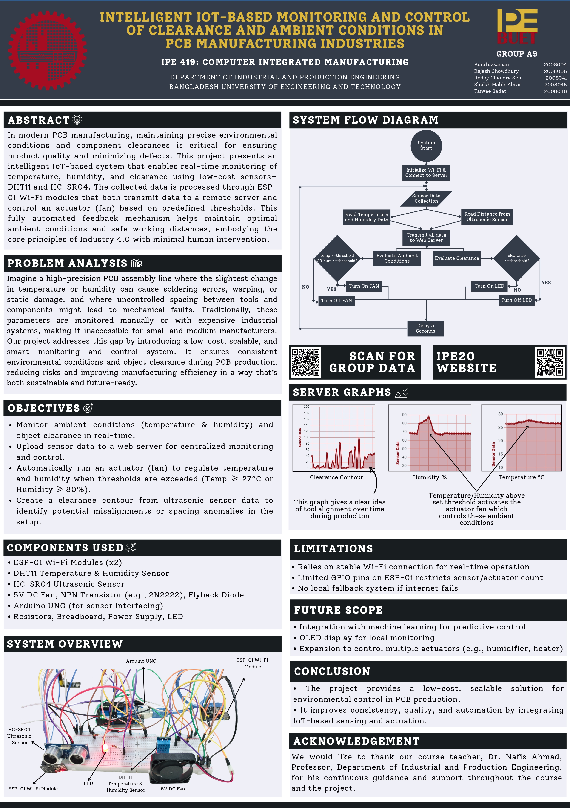

Maintaining proper clearance and ambient conditions is crucial in PCB manufacturing to ensure quality and prevent process failures. Manual control methods lack precision and real-time responsiveness.
| Device / Component | Quantity | Task / Function |
|---|---|---|
| HC-SR04 Ultrasonic Sensor | 1 | Detects clearance/object distance |
| DHT11 Sensor | 1 | Measures temperature and humidity |
| ESP-01S (ESP8266) | 2 | One for data upload, one for automated actuation |
| 5V DC Cooling Fan | 1 | Actuator for cooling, triggered by ESP |
| Transistor Switch Circuit | 1 | Controls fan power from ESP output |
| LED | 1 | Indicates distance threshold (via Arduino) |
| Jumper Wires | Multiple | Electrical connections |

const int trigPin = 9;
const int echoPin = 8;
const int ledPin = 7;
void setup() {
Serial.begin(9600); // Communicates with ESP-01S
pinMode(trigPin, OUTPUT);
pinMode(echoPin, INPUT);
pinMode(ledPin, OUTPUT);
digitalWrite(ledPin, LOW); // LED OFF initially
}
void loop() {
// Trigger pulse
digitalWrite(trigPin, LOW);
delayMicroseconds(2);
digitalWrite(trigPin, HIGH);
delayMicroseconds(10);
digitalWrite(trigPin, LOW);
long duration = pulseIn(echoPin, HIGH);
float distance_cm = duration * 0.0343 / 2;
Serial.println(distance_cm); // Send to ESP
if (distance_cm > 5.0) {
digitalWrite(ledPin, HIGH); // Turn ON LED
} else {
digitalWrite(ledPin, LOW); // Turn OFF LED
}
delay(1000);
}
#include <ESP8266WiFi.h>
#include <ESP8266HTTPClient.h>
#include <ArduinoJson.h>
const char* ssid = "POCO X3";
const char* password = "4o4notfound";
const char* serverHost = "ipe20-buet.top";
const char* endpoint = "/get_data.php";
const char* groupName = "groupA9";
const char* passcode = "passA9";
void setup() {
Serial.begin(9600);
WiFi.begin(ssid, password);
while (WiFi.status() != WL_CONNECTED) { delay(300); }
}
void sendToServer(float distance) {
if (WiFi.status() != WL_CONNECTED) return;
WiFiClient client;
HTTPClient http;
String url = String("http://") + serverHost + endpoint +
"?g=" + groupName +
"&sn=clearance_sensor" +
"&sd=" + String(distance, 2) +
"&p=" + passcode +
"&format=json";
http.begin(client, url);
int httpCode = http.GET();
http.end();
}
void loop() {
if (Serial.available()) {
String raw = Serial.readStringUntil('\n');
float distance = raw.toFloat();
if (distance > 0 && distance < 500) {
sendToServer(distance);
}
}
delay(5000);
}
#include <ESP8266WiFi.h>
#include <ESP8266HTTPClient.h>
#include <DHT.h>
#include <ArduinoJson.h>
const char* ssid = "POCO X3";
const char* password = "4o4notfound";
const char* serverHost = "ipe20-buet.top";
const char* endpoint = "/get_data.php";
const char* groupName = "groupA9";
const char* passcode = "passA9";
#define DHTPIN 2
#define DHTTYPE DHT11
#define FAN_PIN 0
DHT dht(DHTPIN, DHTTYPE);
float lastTemp = 0.0;
float lastHum = 0.0;
void setup() {
Serial.begin(9600);
dht.begin();
pinMode(FAN_PIN, OUTPUT);
digitalWrite(FAN_PIN, LOW);
WiFi.begin(ssid, password);
while (WiFi.status() != WL_CONNECTED) { delay(300); }
}
void sendToServer(const char* sensorName, float value) {
if (WiFi.status() != WL_CONNECTED) return;
WiFiClient client;
HTTPClient http;
String url = String("http://") + serverHost + endpoint +
"?g=" + groupName +
"&sn=" + sensorName +
"&sd=" + String(value, 2) +
"&p=" + passcode +
"&format=json";
http.begin(client, url);
int httpCode = http.GET();
http.end();
}
void loop() {
float temp = dht.readTemperature();
float hum = dht.readHumidity();
if (!isnan(temp) && !isnan(hum)) {
lastTemp = temp; lastHum = hum;
sendToServer("temperature_sensor", temp);
sendToServer("humidity_sensor", hum);
if ((lastTemp >= 29.0) || (lastHum >= 80.0)) {
digitalWrite(FAN_PIN, HIGH);
} else {
digitalWrite(FAN_PIN, LOW);
}
}
delay(5000);
}